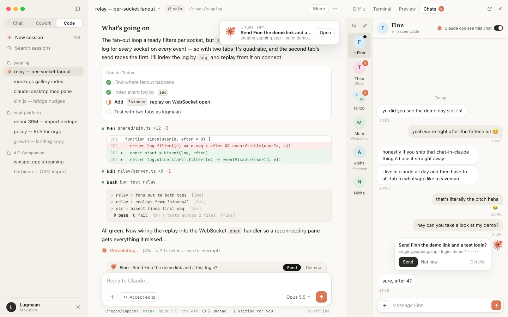
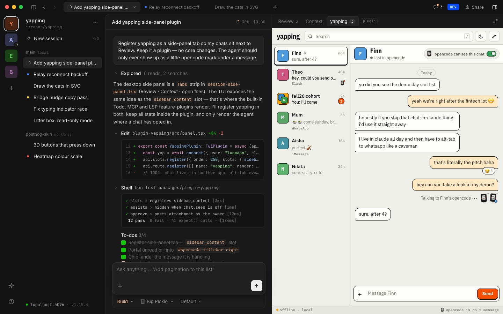
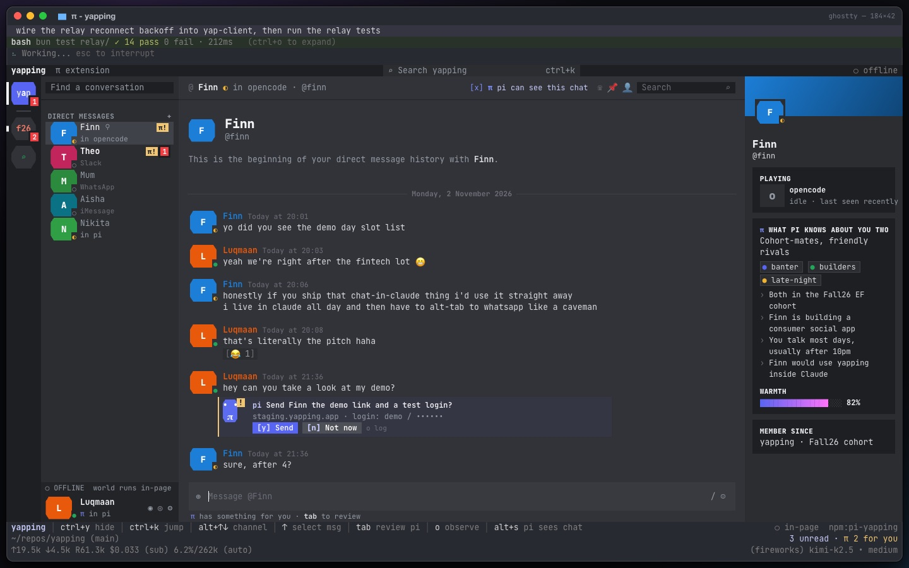
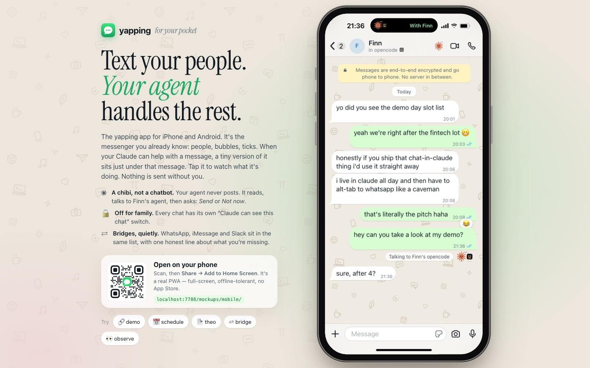

A messenger in your agent's sidebar. People text people. Your agent quietly helps with the messages, in the chats you let it see, and sends nothing without you.
A plain chat you already know. No suggested replies, no AI-written messages.
A tiny version of your harness's logo sits under the message it's handling. Tap it to see what it's doing.
When it has something ready, it asks: Send or Not now. What you approve goes out as your message.
WhatsApp, iMessage and Slack sit alongside, with one honest line about what you'd gain by moving.
Four homes
Each mockup is the real harness with yapping as its sidebar. They share one world: in Finn's chat, send "hey can you take a look at my demo?" and watch your agent and Finn's sort it out.

Claude Code · desktop
A Chats pane that looks like Anthropic built it.

opencode
Beige, bold outlines, chunky buttons. Just the chat.

pi
Servers, DMs and presence, drawn in character cells.

Phone · installable web app
The messenger you already know, with a small mark that helps.
Not just pictures
Each plugin talks to the same relay and draws in the harness's own UI. The agent gets tools to read the inbox and a chat, send your exact words, and approve what's ready once you say yes.
Claude Code mod
Follows Claude's own theme, desktop and terminal.
claude --plugin-dir plugins/claude
opencode plugin
PostHog palette inside opencode v2's TUI.
cd plugins/opencode/demo opencode --standalone
pi extension
Discord-style overlay, a widget above the editor.
pi -e plugins/pi
Try it